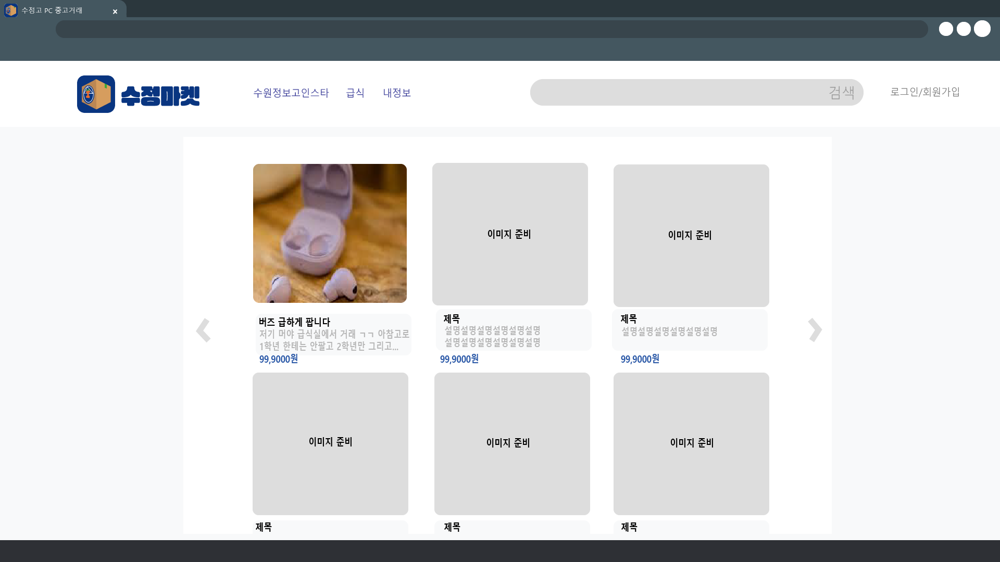

HTML과 CSS, JS를 사용하여 웹사이트를 만들고, 디자인하였고 php를 이용해 백엔드를 개발했습니다.
학교안에서 친구들과 자유롭고 안전하게 중고거래를 하면 어떨까 라는 생각으로 기획하게 됐습니다.
마켓의 메인페이지, 로그인 페이지, 마이 페이지, 업로드 페이지를 각자 파트를 맡아 만들었습니다.
현재 직접 사용할수 있도록 백엔드, DB를 공부하고 프론트와 연결하였고 앱으로도 만들 생각입니다.
현재 웹 호스팅중에 있습니다.
사이트 주소: sujungmarket.store